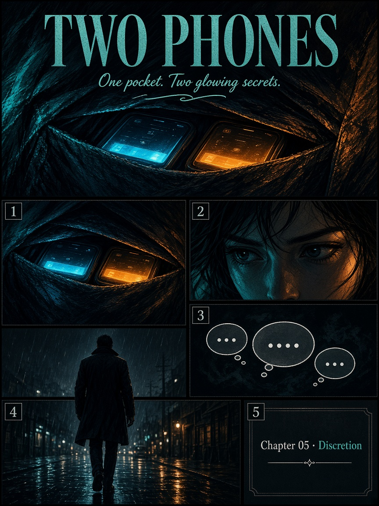
One pocket. Two glowing secrets.
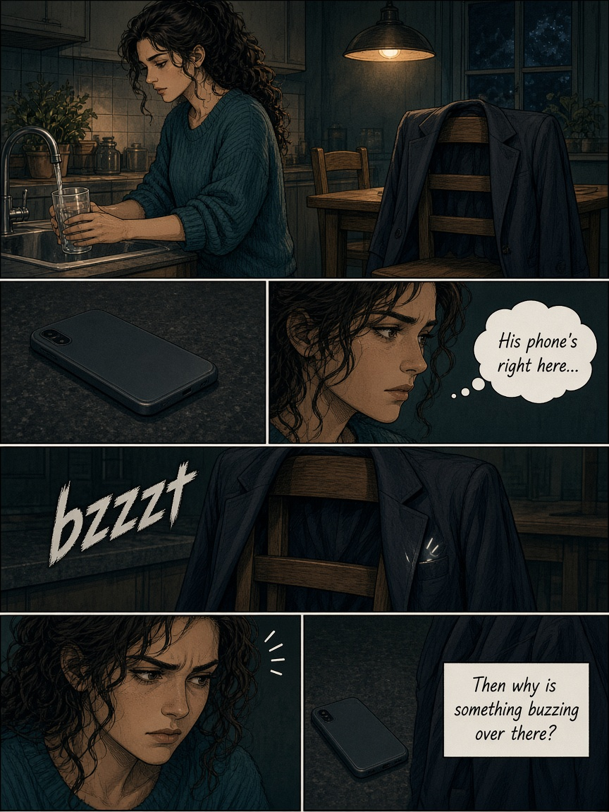
His phone’s right here… so why is something buzzing over there?
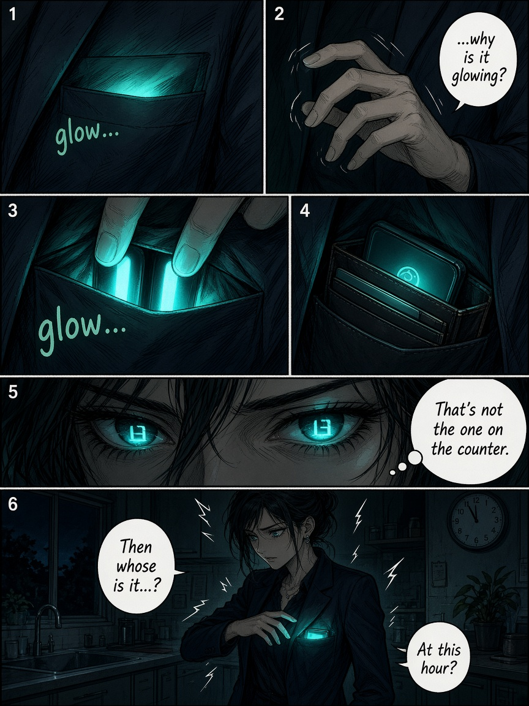
That’s not the one on the counter.
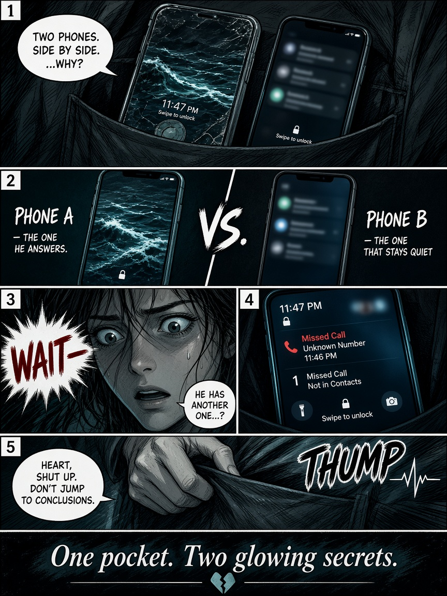
Phone A answers. Phone B stays quiet.
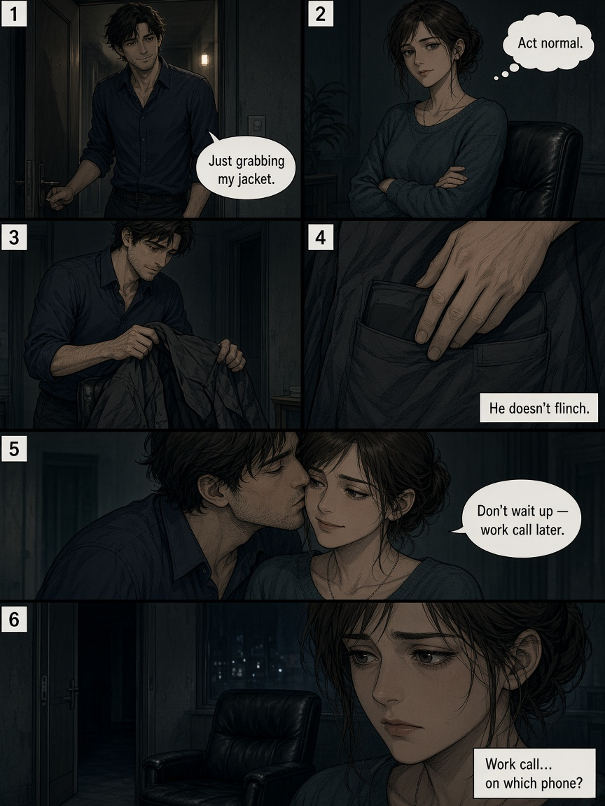
“Don’t wait up — work call later.” On which phone?
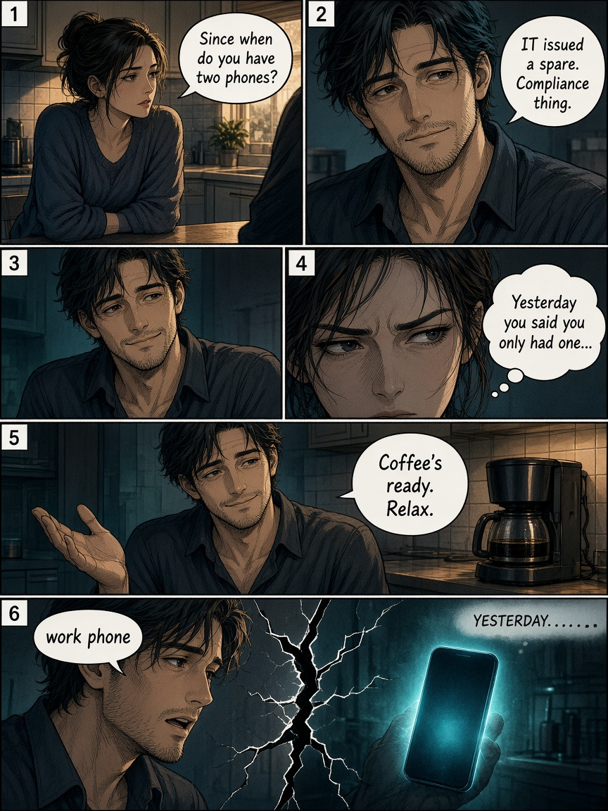
“IT issued a spare. Compliance thing.”
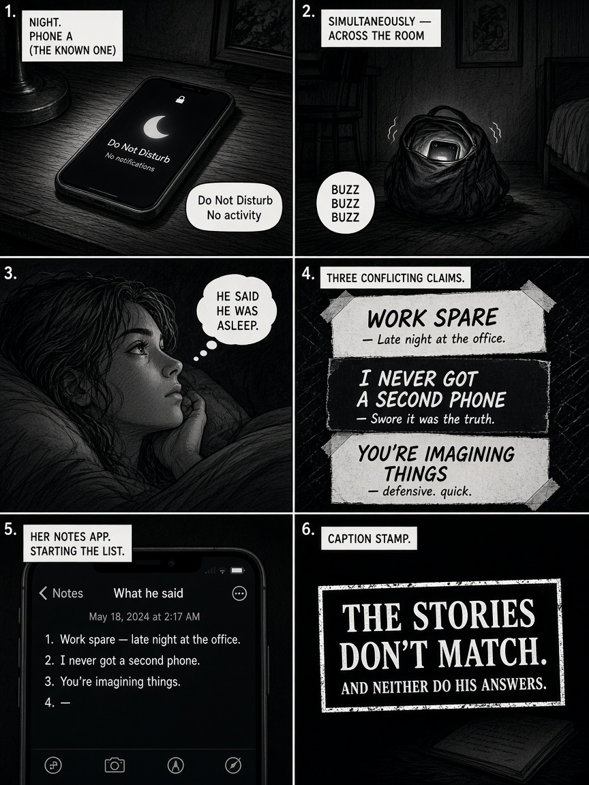
The stories don’t match.
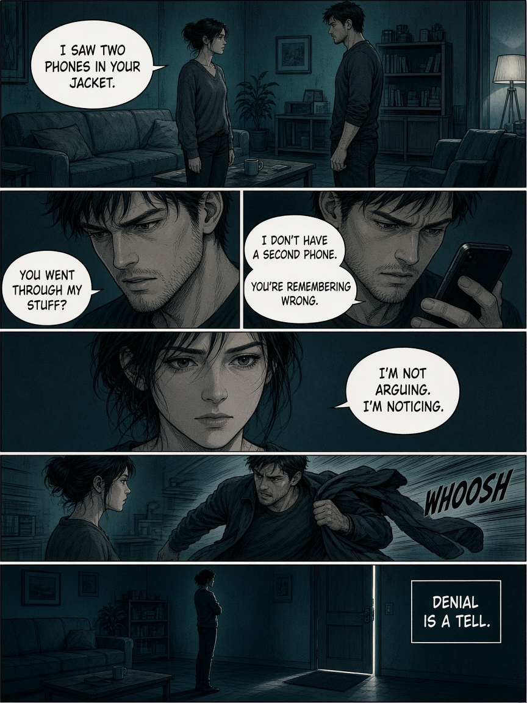
“I don’t have a second phone.” Denial is a tell.
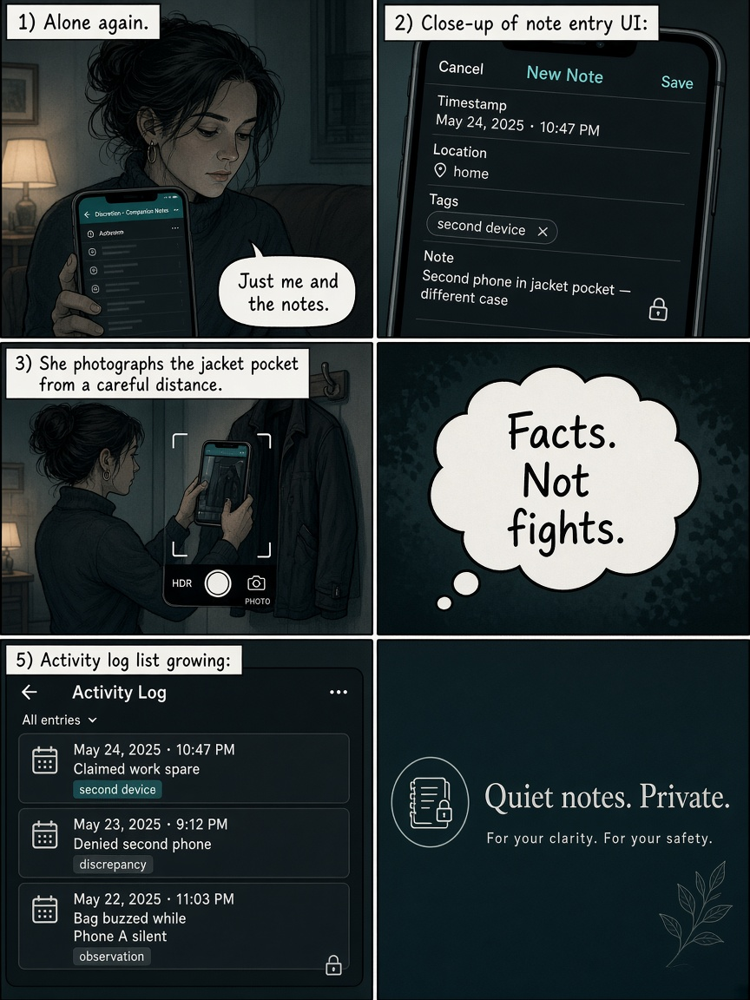
Facts. Not fights.
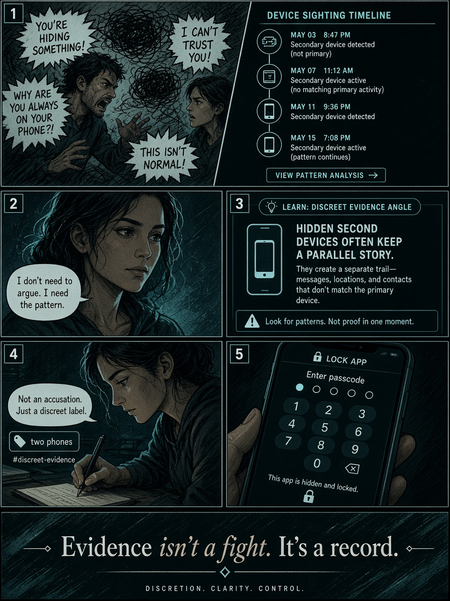
Evidence isn’t a fight. It’s a record.
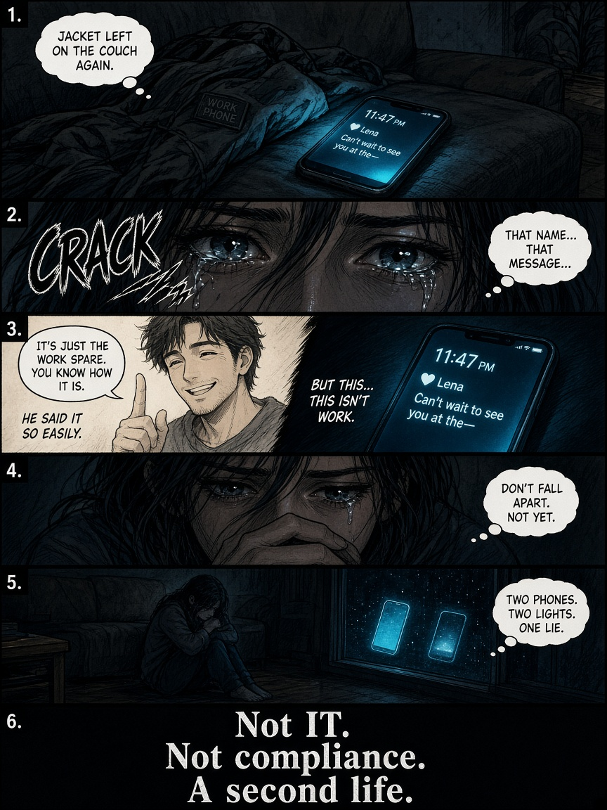
Not IT. Not compliance. A second life.
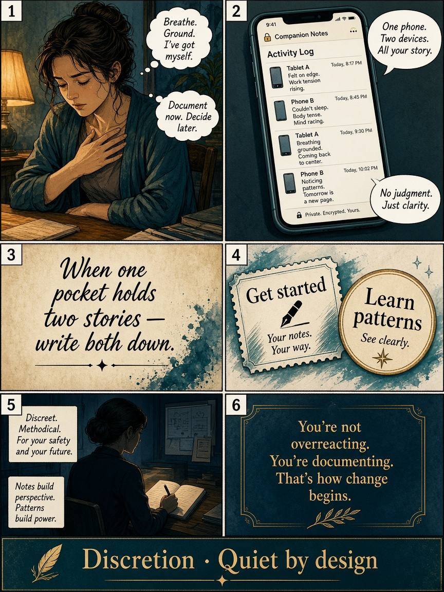
When one pocket holds two stories — write both down.
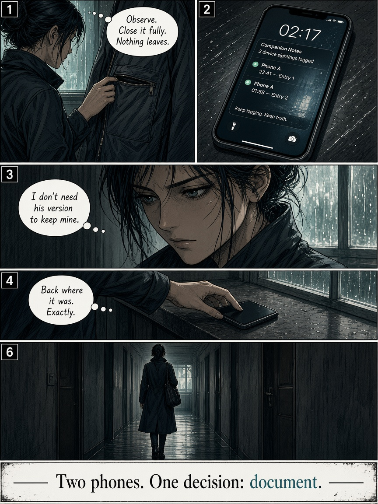
Two phones. One decision: document.
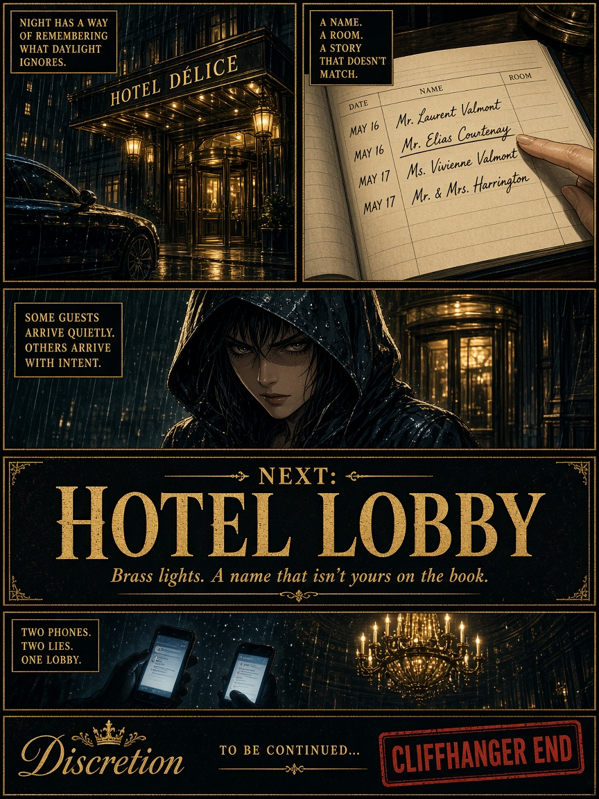
Brass lights. Next: Hotel Lobby…